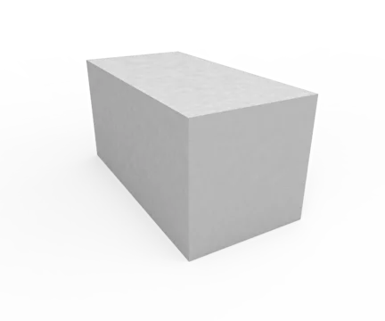
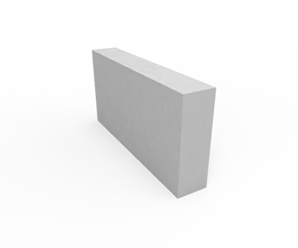
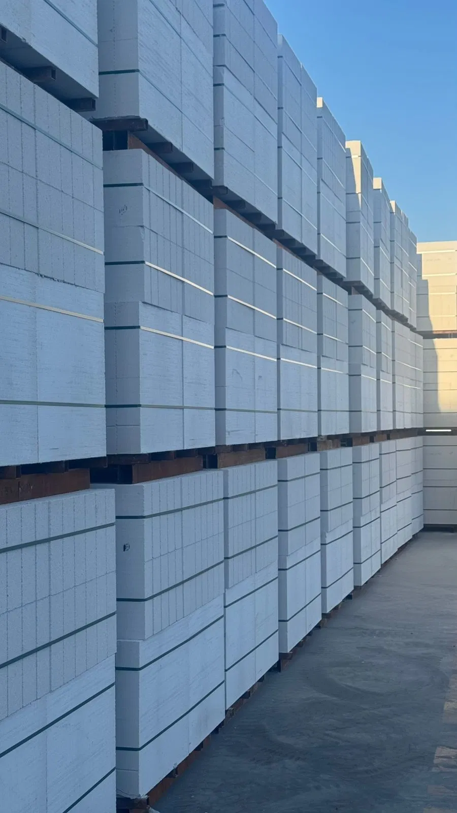

Марки газоблока D400, D500, D600, D700 — полное сравнение

Маркировка D400, D500, D600, D700 — это плотность автоклавного газобетона в сухом состоянии, измеряемая в кг/м³. Чем выше число — тем прочнее блок, но холоднее. Разбираем все 4 марки: где применяются, чем отличаются, какую выбрать для конкретной задачи.
Общая таблица всех марок
| Марка | Плотность (кг/м³) | Прочность | Теплопроводн. (λ) | Морозостойкость | Применение |
|---|---|---|---|---|---|
| D400 | 400 | B2.0 (2.5 МПа) | 0.10–0.12 | F35 | Утеплитель, ненесущие стены |
| D500 | 500 | B2.5 (3.5 МПа) | 0.12–0.14 | F50 | Заполнение каркаса, 1–2 этажа |
| D600 | 600 | B3.5 (5 МПа) | 0.14–0.17 | F75 | Несущие стены 1–5 этажей |
| D700 | 700 | B5.0 (7 МПа) | 0.17–0.21 | F100 | Многоэтажное, нагруженные зоны |
D400 — утеплитель и лёгкие конструкции

D400 — самый тёплый газоблок (λ 0.10–0.12), но самый хрупкий. Прочность B2.0 не позволяет класть несущие стены. Применяется для:
- Утепления существующих кирпичных или бетонных стен (облицовочный слой 100–150 мм)
- Ненесущих перегородок внутри помещений
- Заполнения каркасных конструкций на верхних этажах, где нагрузка минимальна
- Хозпостроек, террас, веранд без перекрытий сверху
Стена из D400 толщиной 400 мм обеспечивает R = 3.2 м²·°C/Вт — нормативный показатель для Астаны без дополнительного утепления. Но прочности хватает только для небольших построек.
D500 — средний баланс для каркасного строительства
D500 — универсальный блок для случаев, где нагрузки ограничены. Прочность B2.5 позволяет использовать его:
- В многоэтажных ЖК с железобетонным каркасом — как заполнение стен
- В несущих стенах одноэтажного дома небольшой площади (до 100 м²)
- Во внутренних межкомнатных перегородках 150–200 мм
- Как улучшенный теплоизоляционный слой на D600
Плюсы: хорошее тепло (λ 0.12–0.14), меньший вес — экономия на фундаменте. Минусы: морозостойкость F50, прочность ниже D600. Детальное сравнение D500 и D600.
D600 — золотой стандарт для частных домов
D600 — самый популярный и востребованный блок в Казахстане для частного строительства. Оптимальный баланс прочности (B3.5), тепла (λ 0.14–0.17) и морозостойкости (F75). Применяется для:
- Несущих наружных стен частных домов 1–3 этажа
- Домов до 5 этажей с железобетонным каркасом или армопоясом
- Межквартирных стен с хорошей звукоизоляцией (48–52 дБ)
- Коттеджей, дач, гаражей — один материал для всей коробки
- Перегородок 100 мм для ненесущих разделений
Почему именно D600? При той же стоимости, что D500, он в 1.5 раза прочнее, лучше держит крепёж для мебели и навесных фасадов. Небольшая разница в тепле компенсируется утеплителем 50 мм минваты.
В Астане для частного дома оптимальная схема — D600 толщиной 300 мм + минвата 50 мм. Расчёт на дом 100 м².
D700 — для нагруженных зон и многоэтажек

D700 — самая прочная марка автоклавного газобетона (B5.0, 7 МПа), морозостойкость F100. Применяется там, где D600 не справляется:
- Многоэтажные здания 6–10 этажей — несущие стены
- Цокольные этажи (но только с гидроизоляцией — блок гигроскопичен)
- Нагруженные колонны и простенки в каркасно-блочных зданиях
- Армопояса, перемычки — требуют повышенной прочности
- Стены под тяжёлые кровли (металлочерепица + снежные нагрузки)
Минусы D700: хуже тепло (λ 0.17–0.21) — всегда нужен утеплитель; больше вес — выше нагрузка на фундамент; на 15–20% дороже D600. Для частного дома обычно избыточен.
Какую марку выбрать — гид по задачам
| Ваша задача | Рекомендуемая марка | Толщина |
|---|---|---|
| Частный дом 1 этаж, Астана | D600 | 300 мм + 50 мм утепл. |
| Коттедж 2 этажа, Алматы | D600 | 300–400 мм |
| Дом 3 этажа + гараж | D600 или D700 внизу | 400 мм |
| Заполнение ЖК с ЖБ-каркасом | D500 | 200–250 мм |
| Перегородки внутри дома | D500 или D600 | 100 мм |
| Межквартирные стены | D600 | 200 мм |
| Утепление кирпичной стены | D400 | 100–150 мм |
| Хозпостройка, гараж | D500–D600 | 200–300 мм |
| Многоэтажка 6+ этажей | D700 | 300–400 мм |
Сравнение по весу и фундаменту
Один кубометр газоблока весит:
- D400: 400 кг
- D500: 500 кг
- D600: 600 кг
- D700: 700 кг
Для дома 100 м² из D600 стены весят ~25 тонн. Из D700 — 30 тонн. Разница в 5 тонн требует более дорогого фундамента. Для сравнения: кирпичный дом такой же площади — 50–60 тонн стен.
Цены на марки в Астане (2026)
| Марка | Цена за м³ (1 сорт) | Цена за 1 поддон (0.9 м³) |
|---|---|---|
| D400 | ~38 000 ₸ | ~34 200 ₸ |
| D500 | ~40 000 ₸ | ~36 000 ₸ |
| D600 | 41 500 ₸ | 37 350 ₸ |
| D700 | ~48 000 ₸ | ~43 200 ₸ |
На что обратить внимание при покупке
- Геометрия ±3 мм (позволяет тонкий клеевой шов 1–3 мм)
- Отсутствие сколов, трещин
- Паспорт качества на партию
- Сертификат ГОСТ 31360-2007
- Автоклавная обработка (не гидратационный твердеющий)
- Однородный цвет блока по всему объёму
Итог: выбор по одному принципу
Правило большого пальца:
- Частный дом 1–3 этажа → всегда D600 (вариантов нет)
- Многоэтажка с каркасом → D500 (заполнение)
- Утепление → D400
- Особые нагрузки → D700 (редко, дорого)
Если вы строите дом в Казахстане в 2026 году — 9 из 10 случаев ваш выбор это D600. Мы поставляем его напрямую с завода в Астане.
Заказать газоблок нужной марки
D400, D500, D600, D700 — все марки в наличии. Прямые поставки с завода.
Получить прайс →